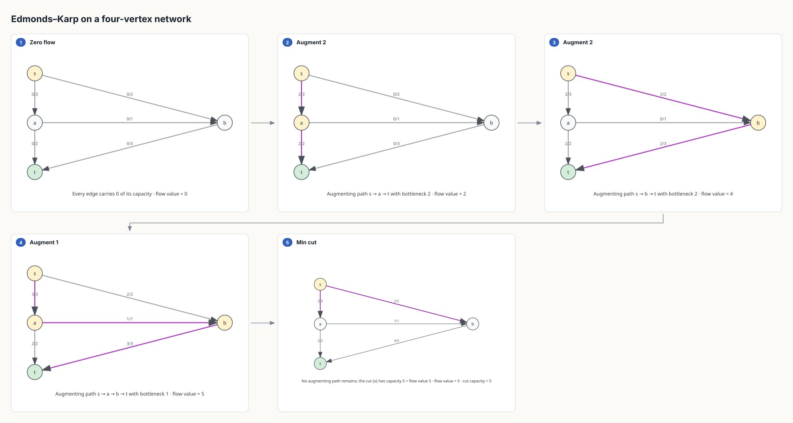
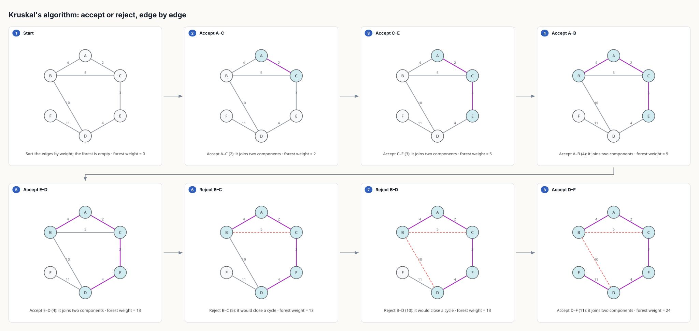

Graph theory, computed · 01
The picture cannot show a state the algorithm did not reach
Graph algorithms
Every graph-algorithm video you have watched was drawn by hand: someone decided that vertex C turns green on beat four. That is fine for one textbook example and useless for a lab, where the graph is the student's and the question is whether their answer is right. So the algorithm runs first, on the graph you pass in, and the frames are read off its trace.
Eleven graph algorithms, computed once and drawn twice.
BFS and DFS, Dijkstra and Bellman–Ford, Kruskal and Prim, Kahn's
topological order, Kosaraju's components, Edmonds–Karp with its
min cut, greedy colouring, Kuhn's matching with König's cover, and
Hierholzer's Euler circuit live in one module,
straightedge/graphs.py. The Manim scene and the SVG
storyboard both read its step trace, so a video and a handout of
the same request cannot disagree about which vertex was settled
third — and neither can show a state the algorithm did not reach.
The trace is a list of roles, not colours: this vertex is
current, these are the frontier, that edge is
in the tree, this one was rejected. Each lane
maps roles onto its own palette. What a step also carries is the thing
a lecture writes on the board beside the graph — the queue, the
distance table, the running forest weight — and a caption, which is
the sentence the narration should say over it. One step, one
narration beat: the video's whole structure is the algorithm's.
Computed once, drawn twice

graph_algorithm
with animate: false. Video and storyboard read one step
trace, so the fourth panel here is the fourth beat of a
video of this network; nothing is re-derived on the way to the
page.
Refused, with the witness
The half of this that matters for a lab is what happens when the graph makes the request false. Ask for a topological order of a graph with a cycle and no drawing tool will stop you; most will happily number the vertices. Here the algorithm raises, and what it raises carries the structure that proves it:
$ straightedge draw graph_algorithm --params '{"algorithm": "topological_sort",
"directed": true, "nodes": [{"id":"A"},{"id":"B"},{"id":"C"},{"id":"D"}],
"edges": [{"from":"A","to":"B"},{"from":"B","to":"C"},{"from":"C","to":"A"},{"from":"C","to":"D"}]}'
'graph_algorithm' was refused: the graph has a cycle, so it has no topological order: A → B → C → AThe same gate runs before a video. Dijkstra is handed a negative weight and the precondition says so, in the algorithm's own terms, before Manim is asked for a single frame:
$ straightedge scaffold --template graph/shortest_path \
--params '{"algorithm": "dijkstra", "nodes": [{"id":"A"},{"id":"B"}],
"edges": [{"from":"A","to":"B","weight":-2}]}'
[error] graph/shortest_path: edge 'A'–'B' has negative weight -2; Dijkstra requires
nonnegative weights; nothing would be drawn
1 precondition(s) say this plan will not show what was requested.
Bellman–Ford accepts that weight and refuses a negative
cycle instead — B → C → B, vertex by vertex. An
Euler circuit on K4 is refused with the four
odd-degree vertices. A matching is refused if an edge sits inside one
side of the declared partition. Each of these is the exercise's actual
content: the reason there is no answer is the answer, and it arrives
as a named structure a student can check by hand, not as a blank
canvas or a plausible picture of something that is not so.
The edges Kruskal refuses

Prim, run on the same graph, ends on the same tree and the same weight, 24 — which the test suite asserts rather than trusts. Every algorithm here is checked against a property a textbook states: Prim and Kruskal agree; the max flow equals the cut it ends on; König's cover has exactly the matching's size; DFS agrees with the recursive reference on graphs with cross edges, which is precisely where the usual iterative-stack shortcut draws a "DFS tree" no depth-first search produces.
Without Manim, without JavaScript

What each one needs, and what it refuses
| Algorithm | Needs | Refused with |
|---|---|---|
| BFS · DFS | a start vertex | — |
| Dijkstra | weights ≥ 0 | the negative edge |
| Bellman–Ford | weights | the negative cycle |
| Kruskal · Prim | undirected, weights | — |
| Topological sort | directed | the cycle |
| Strongly connected components | directed | — |
| Max flow · min cut | directed, capacities, s ≠ t | s = t, an uncapacitated arc |
| Greedy colouring | — | — |
| Bipartite matching · König cover | a declared partition | an edge inside one side |
| Euler circuit / trail | connected edges | the odd-degree vertices |
All eleven are in the SVG lane as graph_algorithm. Four
concepts — traversal, shortest path, spanning tree, max flow — are
also Manim videos under the graph topic, reachable by
prompt on a stock graph or by template with your own.
Run it on your graph
git clone https://github.com/SciMigo/straightedge
cd straightedge && python3 -m pip install -e '.[render]'
# a video of Dijkstra on your graph — one narration beat per computed step
straightedge render --template graph/shortest_path --params '{
"algorithm": "dijkstra", "start": "A",
"nodes": [{"id":"A"},{"id":"B"},{"id":"C"},{"id":"D"}],
"edges": [{"from":"A","to":"B","weight":2},{"from":"A","to":"C","weight":5},
{"from":"B","to":"C","weight":1},{"from":"B","to":"D","weight":4},
{"from":"C","to":"D","weight":1}]}'
# the same states as a printable storyboard, no Manim needed
straightedge draw graph_algorithm --params '{"algorithm": "dijkstra", "animate": false, ...}'A frame is at most eight vertices and seventeen beats; past that a video stops being one lesson and becomes a log, and the precondition says so instead of rendering it small. The SVG storyboard holds twelve panels and the animated SVG twenty-four frames, on the same principle.
What this is for
A lab. The student brings the graph — an edge list, a homework figure — and the question is not "what does Dijkstra look like" but "is my table right, and if not, where does it first go wrong". Because every state is computed, the answer is a step number and a caption. Because a false claim is refused with its witness, "there is no topological order" comes back as the cycle, and "this is not bipartite" as the odd cycle. The picture is the last thing produced, and it is produced from the run.